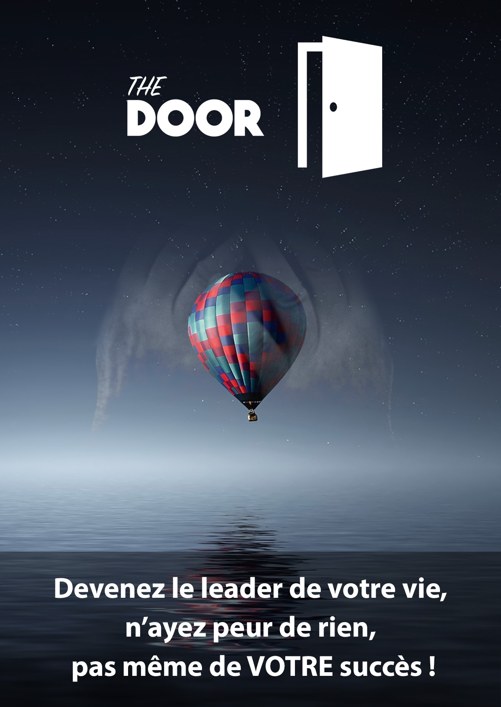
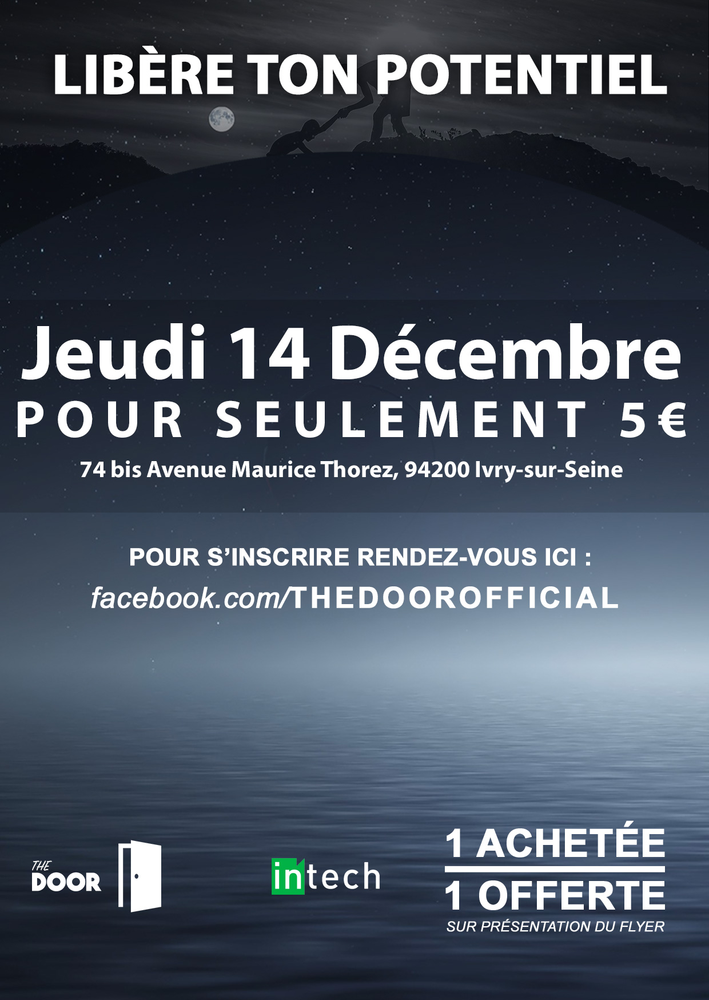

THE DOOR
The Door a été un projet dont je me rappellerai toute ma vie. Je me souviens encore arriver à IN’TECH, sans une once de confiance en moi, très timide et ayant peur du jugement.
J’ai alors été mis dans un groupe par défaut pour ce projet, sans savoir qu’il allait changer ma vie.
Description
Le projet The Door était extrêmement ambitieux, et tournait premièrement autour d’un seul objectif : Animer une conférence sur la confiance en soi.
A la manière de David Laroche, nous devions alors réussir à redonner à un public, si possible externe à l’école, confiance en eux.
Autant vous dire que, je n’aurais jamais choisi ce projet de moi-même, car comment peut-on animer une conférence parlant de confiance quand je n’ai moi-même pas confiance en moi ?
Vous l’aurez deviné, ce projet qui paraissait pourtant si simple, a été un véritable challenge pour moi, et présentait beaucoup plus qu’un seul objectif
Objectifs
Ceux-ci étaient très nombreux. Je pense que c’est le projet le plus ambitieux sur lequel j’ai travaillé, et j’aimerai vous décrire l’avancé de chacun d’entre eux, mais écrire un roman serait plus facile.
Les voici :
- S’auto former sur la confiance en soi
- Se former ensemble sur la prise de parole
- Créer une page Facebook et la promouvoir
- Créer une vidéo de promotion ( Facebook et youtube )
- Créer des flyers, et les distribuer dans la rue
- Publier un évènement sur le Facebook de l’école, passer dans les classes
- Récupérer le plus de mails possible, puis créer une campagne de mail grâce à Mailchimp
- Créer une billetterie pour la conférence
- Trouver un endroit pour animer la conférence
- Préparer les textes, les slides, et les présentations
- Préparer des activités pour animer la conférence ( méditation, exercices, participation du public… )
Je ne vais pas le cacher, certains de ces objectifs n’ont pas été une réussite total. Je pense principalement à la communication qui visait à attirer des gens externes à l’école pour qu’ils puissent participer à notre conférence.
Il est difficile d’avoir de la visibilité en seulement quelques mois et sans avoir de contact, mais nous avons tout de même eu quelques personnes externes, qui nous ont toutes donné un retour positif !
Le projet dans sa généralité était une énorme réussite, et chaque membre du groupe en est sorti avec une énorme confiance en soi.
Présentations
La conférence se comportait en 4 parties, aussi nombreuses que les membres de l’équipe :
– La peur - Kevin
-
– Mindset et pensée positive - Quentin
-
– La visualisation - François
-
– Les éléments déclencheurs – Rafael (moi)
Ma contribution
Parmi tous ces objectifs, j’ai pu participé à certains d’entre eux.
En passant les autoformations, j’ai créé la page Facebook, et j’avais pour charge de la promouvoir, en utilisant la publicité sur ce réseau. J’ai ensuite fait des statistiques afin de savoir quelles techniques étaient les plus efficaces.
J’ai également participé à la création de la vidéo, en trouvant la musique, les vidéos à monter, et en écrivant les sous-titres.
J’ai été présent à toutes les distributions de flyers, et pour la communication interne à l’école.
Pour finir, j’ai bien évidemment préparé mon texte et ma présentation, et j’ai aidé mes collègues pour les leurs.
Vidéo promotionnelle
Vous pouvez retrouver la vidéo promotionnelle principale >ici< (Sortez les mouchoirs !) :
Flyers
Voici les flyers que nous avons distribué:

